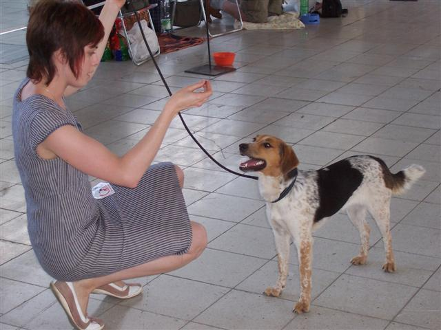
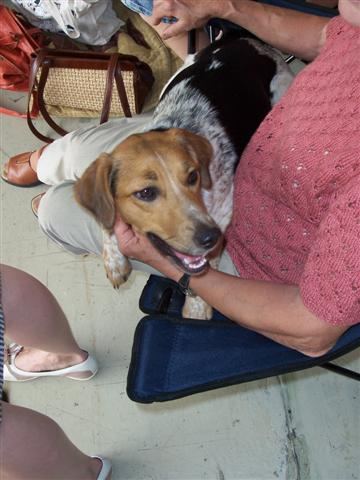
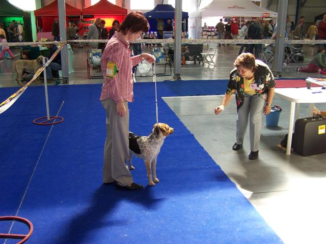
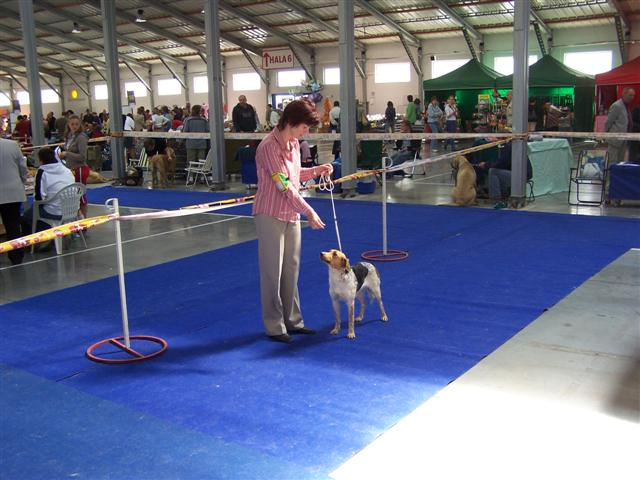
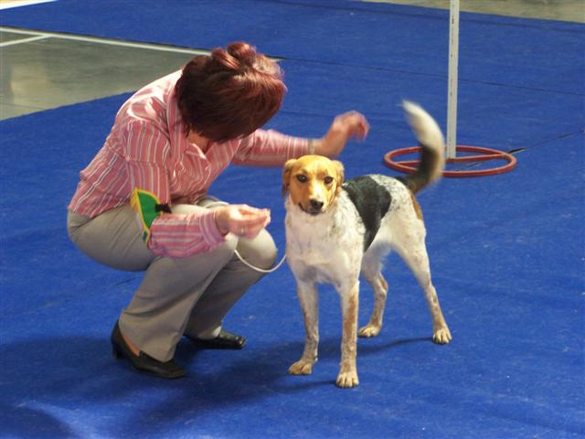
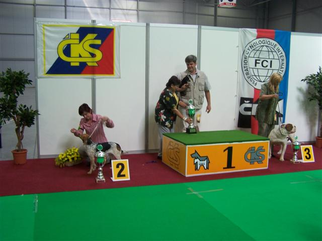
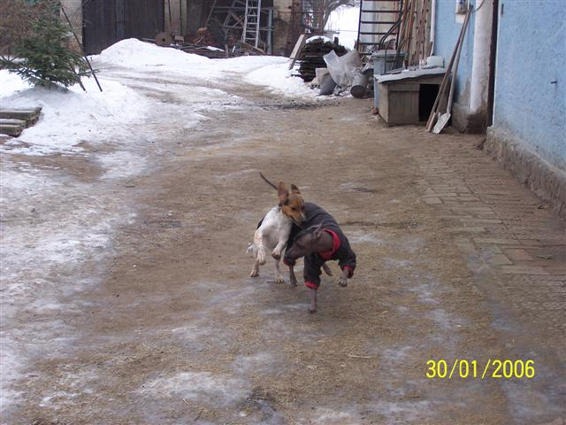
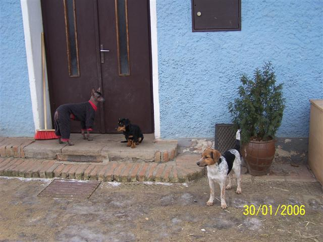
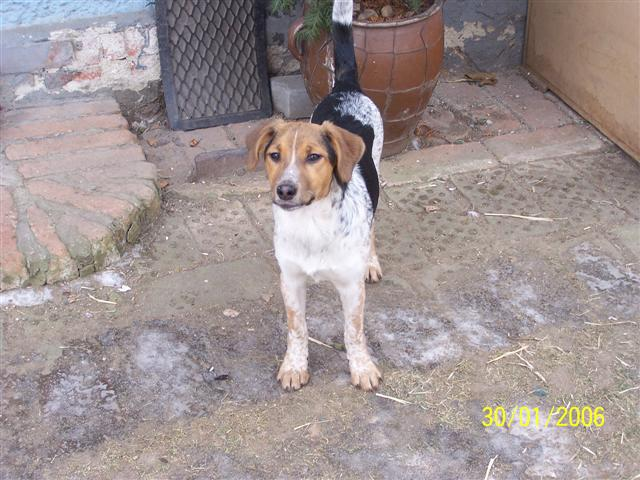
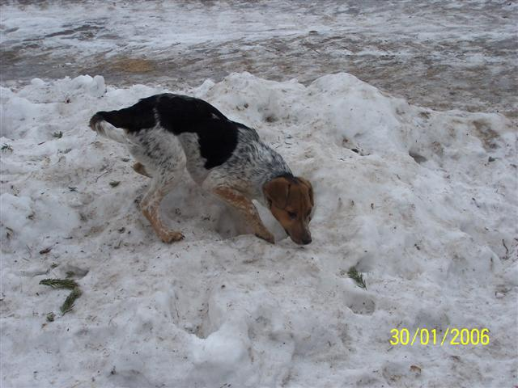

Navigace |
Sestřička Dorka Velký darNelina úspěšná setřička na 1.výstavě 
 Je to taky takový smějáček jako ta naše:-) Dorka na výstavě 29.4.2007 v Letňanech
 Musíme Nele říct, že ségra už krásný výstavní postoj a klidné stání umí na jedničku, třeba jí to bude motivovat. 

 Dorka Velký dar se konce umístila jako druhá mezi FCI neuznanými plemeny! Dorka doma se psími kamarády
 Dorka s Beruškou, leden 2006.
 Beruška, Bobík a Dorka.


|